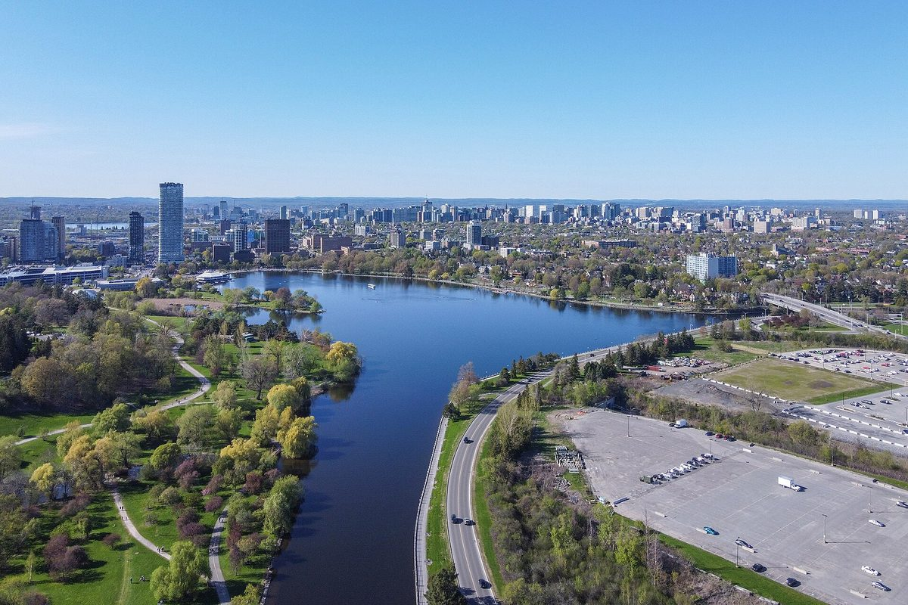

Practical information
Ottawa in early summer
University of Ottawa
Department of Mathematics and Statistics
Ottawa, Ontario, Canada
Building and room to be announced.
Getting there
The campus is in downtown Ottawa, next to the Rideau Canal, and the O-Train Line 1 stops at uOttawa station. Ottawa International Airport (YOW) is about 20 minutes away by car. From Montréal, Ottawa is about two hours by VIA Rail or bus.
Accommodation
Several hotels are within walking distance of the University of Ottawa. Recommended options:
Canada Day
The workshop ends the day before Canada Day (July 1). Ottawa, the capital, celebrates with concerts and fireworks downtown, so you may want to stay an extra day.
Open in Google Maps

